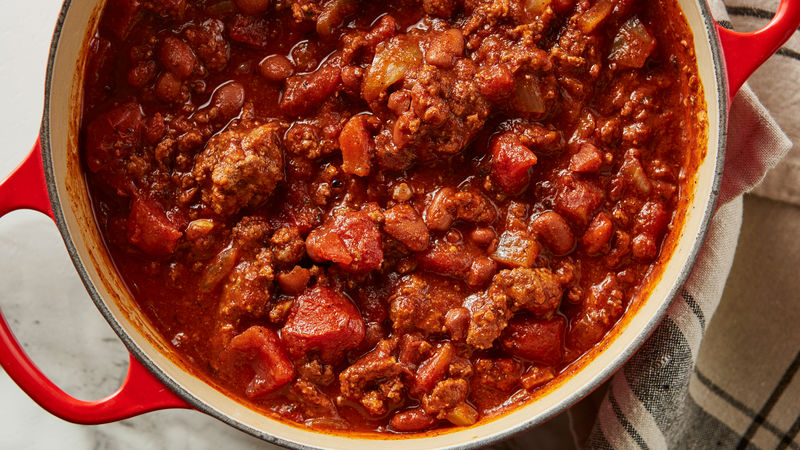

Chili

Description
Chili is a spicy stew containing chili peppers, meat, tomatoes, and optionally kidney
beans. Other seasonings may include garlic, onions, and cumin. The dish originated in
northern Mexico or southern Texas.
Ingredients
- 1 lb ground beef (at least 80% lean)
- 2 cans (19-oz each) Progresso red kidney beans, drained, rinsed
- 1 can (15 oz) Muir Glen organic tomato sauce
- 1 cup water
- 1 tablespoon chili pepper
- 1 teaspoon onion powder
- 1/4 teaspoon salt
Step-by-step
- Cook beef in 4-quart saucepan over medium-high heat 5 to 7 minutes, stirring
occasionally, until brown; drain.
- Stir in remaining ingredients. Heat to boiling over medium heat, stirring
occasionally. Reduce to simmer; cook, uncovered, 5 minutes to combine flavors.